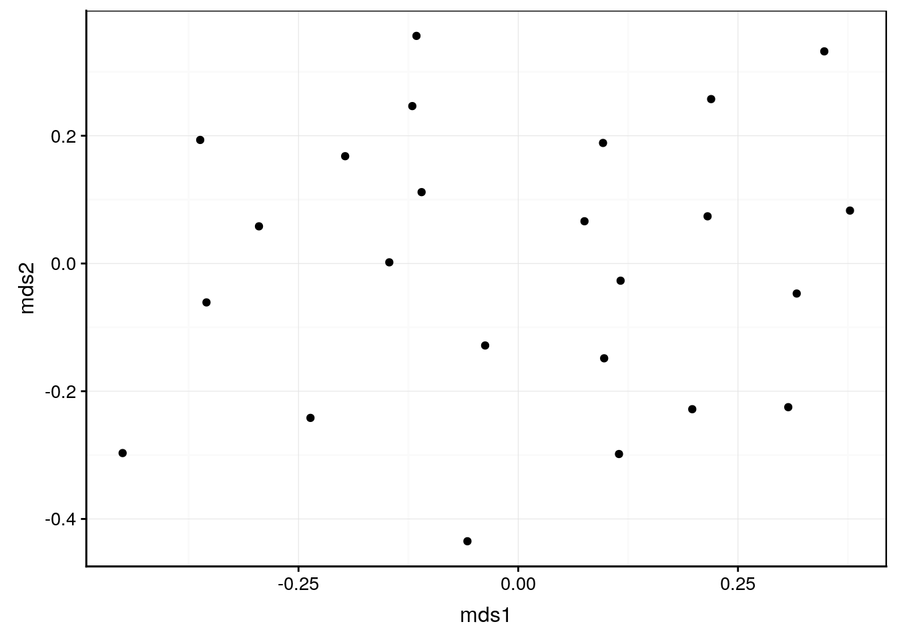
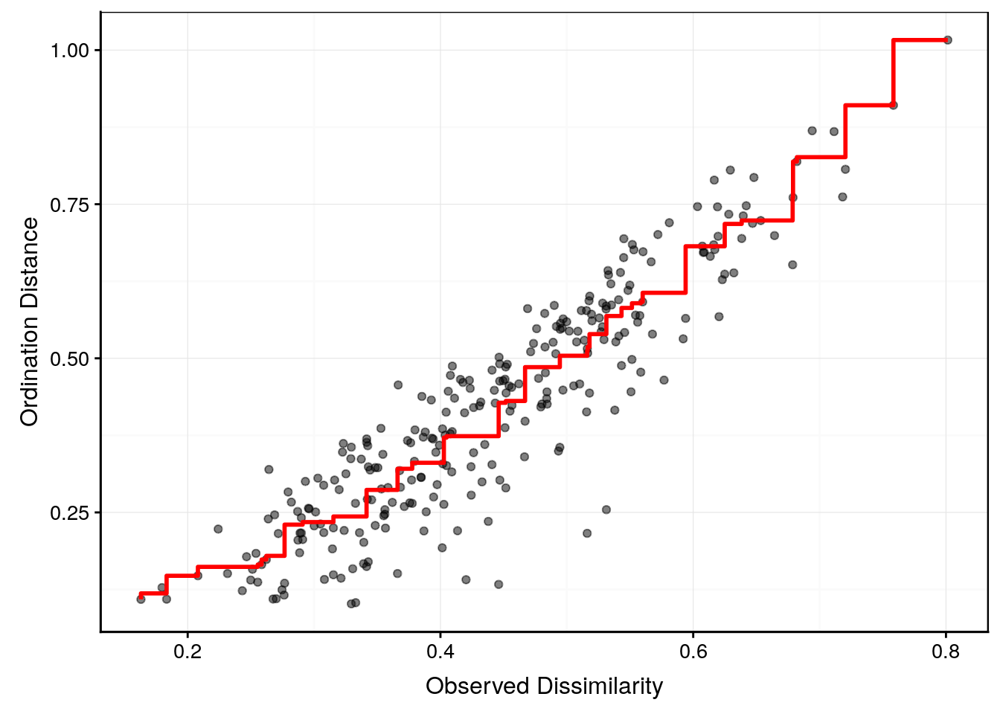
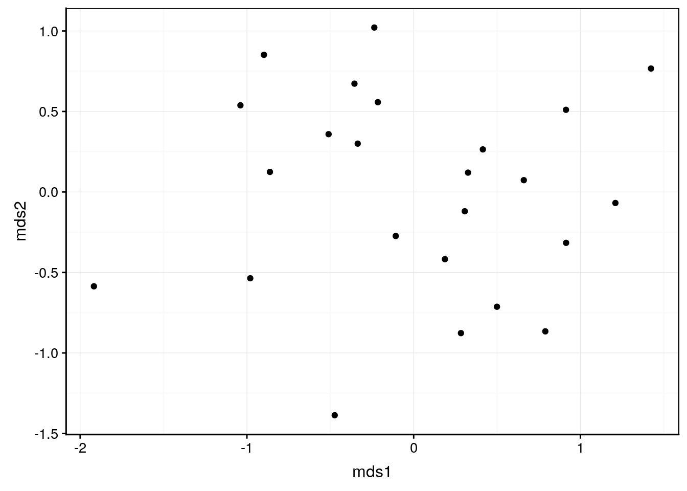
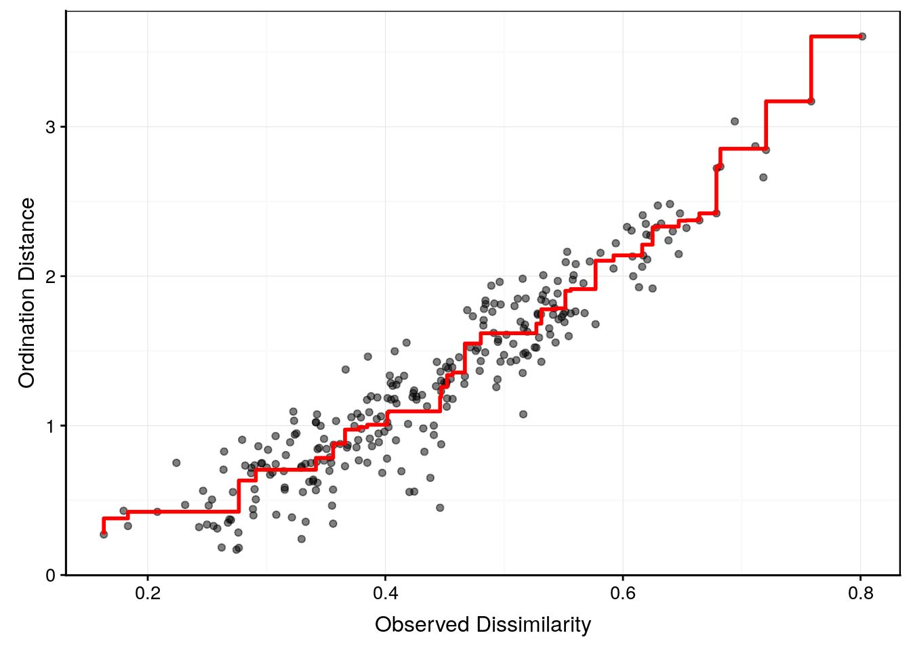

6.2 Positionnement multidimensionnel (MDS)
Le positionnement multidimensionnel, ou “multidimensional scaling” en anglais, d’où son acronyme fréquemment utilisé en français également : le MDS, est une autre façon de représenter clairement l’information contenue dans une matrice de distances. Ici, l’objectif n’est pas de regrouper ou de classifier les individus du tableau, mais de les ordonner sur un graphique en nuage de points en deux ou trois dimensions. Ce graphique s’appelle une “carte”, et la technique qui la réalise est une méthode d’ordination.
Au départ, nous avons p colonnes et n lignes dans le tableau cas par variables, c’est-à-dire, p variables quantitatives mesurées sur n individus distincts. Nous voulons déterminer les similitudes ou différences de ces n individus en les visualisant sur une carte où la distance d’un individu à l’autre représente cette similitude. Plus deux individus sont proches, plus ils sont semblables. Plus les individus sont éloignés, plus ils diffèrent. Ces distances entre paires d’individus, nous les avons déjà calculées dans la matrice de distances. Mais comment les représenter ? En effet, une représentation exacte ne peut se faire que dans un espace à p dimensions (même nombre de dimensions que de variables initiales). Donc, afin de réduire les dimensions à seulement 2 ou 3, nous allons devoir “tordre” les données et accepter de perdre un peu d’information. Ce que nous allons faire avec la MDS correspond exactement à cela : nous allons littéralement “écraser” les données dans un plan (deux dimensions) ou dans un espace à trois dimensions. C’est donc ce qu’on appelle une technique de réduction de dimensions.

Il existe, en réalité, plusieurs techniques de MDS. Elle répondent toutes au schéma suivant :
- A partir d’un tableau multivarié de n lignes et p colonnes, nous calculons une matrice de distances (le choix de la transformation initiale éventuelle et de la métrique de distance utilisée sont totalement libres ici17).
- Nous souhaitons représenter une carte (nuage de points) à m dimensions (m = 2, éventuellement m = 3) où les n individus seront placés de telle façon que les proximités exprimées par des valeurs faibles dans la matrice de dissimilarité soient respectées autant que possible entre tous les points.
- Pour y arriver les points sont placés successivement sur la carte et réajustés afin de minimiser une fonction de coût, encore appelée fonction de stress qui quantifie de combien nous avons dû “tordre” le réseau à p dimensions initial représentant les distances entre toutes les paires. C’est en adoptant différentes fonctions de stress que nous aboutissons aux différentes variantes de MDS. La fonction de stress est représentée graphiquement (voir ci-dessous) pour diagnostiquer le traitement réaliser et décider si la représentation est utilisable (pas trop tordue) ou non.
- Le positionnement des points faisant intervenir un facteur aléatoire (choix des points à placer en premier, réorganisation ensuite pour minimiser la fonction de stress), le résutat final peut varier d’une fois à l’autre sur les mêmes données. Il faut en être conscient.
Nous vous épargnons ici les développements mathématiques qui mènent à la définition de la fonction de stress. Nous nous concentrerons sur les principales techniques et sur leurs propriétés utiles en pratique.
Afin d’exécuter de réaliser les analyses dans la section suivante, vous devez avoir au préalable exécuté les fonctions ci-dessous :
SciViews::R()
library(broom)
# function mds for several multidimensionnal scaling functions ------
mds <- function(d, k = 2, fun = c("cmdscale", "isoMDS", "monoMDS", "sammon"), ...) {
fun <- match.arg(fun)
if (fun == "cmdscale") {
mds. <- stats::cmdscale(d = d, k = k, eig = TRUE, ...)
class(mds.) <- c("cmdscale", "mds", "list")
}
if (fun == "isoMDS") {
mds. <- MASS::isoMDS(d = d, k = k,...)
class(mds.) <- c("isoMDS", "mds", "list")
}
if (fun == "sammon") {
mds. <- MASS::sammon(d = d, k = k,...)
class(mds.) <- c("sammon", "mds", "list")
}
if (fun == "monoMDS") {
mds. <- vegan::monoMDS(dist = d, k = k,...)
class(mds.) <- c("monoMDS", "mds", "list")
}
mds.
}
# plot.mds : MDS2 ~ MDS1 --------------------------------
plot.mds <- function(x,...){
points <- tibble::as_tibble(x$points, .name_repair = "minimal")
colnames(points) <- paste0("mds", 1:ncol(points))
plot(data = points, mds2 ~ mds1,...)
}
autoplot.mds <- function(x, ...){
points <- tibble::as_tibble(x$points, .name_repair = "minimal")
colnames(points) <- paste0("mds", 1:ncol(points))
chart(points, mds2 ~ mds1, ...) +
geom_point()
}
shepard <- function(d = d, x = x, p=2) {
she <- MASS::Shepard(d = d, x = x$points, p = p)
class(she) <- c("shepard", "list")
she
}
plot.shepard <- function(x, ylab = "Ordination Distance", xlab = "Observed Dissimilarity", ...){
she <- tibble::as_tibble(x, .name_repair = "minimal")
plot(data = she, y~x, ...)
lines(data = she, yf ~ x, type = "S", col = "red", lwd = 3)
}
autoplot.shepard <- function(x) {
she <- as_tibble(x)
chart(data = she, y~x) +
geom_point(alpha = 0.5) +
geom_step(f_aes(yf ~ x), direction = "vh", col = "red", lwd = 1) +
labs(y = "Ordination Distance", x = "Observed Dissimilarity")
}
# augment.mds -------------------------------------------
augment.mds <- function(x, data,...){
points <- as_tibble(x$points)
colnames(points) <- paste0(".mds", 1:ncol(points))
data <- bind_cols(data, points)
data
}6.2.1 MDS classique ou PCoA
La forme classique, aussi appelée analyse en coordonnées principales (Principal Coordinates Analysis en anglais ou PCoA), va projetter le nuage de points à p dimensions dans un espace réduit à k = 2 dimensions (voire éventuellement à 3 dimensions). Cette projection est comme l’ombre chinoise projettée d’un objet tridimensionnel sur une surface place en deux dimensions.

Ombre chinoise : un placement astucieux des mains dans le faisceau lumineux permet de projetter l’ombre d’un animal ou d’un objet sur une surface plane. La PCoA fait de même avec vos données.
Partant d’une matrice de distance, élaborée à l’aide de la métrique de votre choix (euclidienne, Manhattan, Bray-Curtis, Canberra, …) la projection est calculée à l’aide de la fonction cmdscale(). Appliqué aux données iris, cela donne :
Considérons un relevé de couverture végétale en 24 stations concernant 44 plantes répertoriées sur le site de l’étude, par exemple, Callvulg est Calluna vulgaris, Empenigr est Empetrum nigrum, etc. Les valeurs sont les couvertures végétales observées pour chaque plante sur le site, expérimées en pourcents. La première colonne nommée rownames contient les identifiants des stations. Nous allons les enlever du tableau après les avoir transférés dans la variable stations.
veg <- read("varespec", package = "vegan")
veg# # A tibble: 24 x 45
# rownames Callvulg Empenigr Rhodtome Vaccmyrt Vaccviti Pinusylv Descflex
# <chr> <dbl> <dbl> <dbl> <dbl> <dbl> <dbl> <dbl>
# 1 18 0.55 11.1 0 0 17.8 0.07 0
# 2 15 0.67 0.17 0 0.35 12.1 0.12 0
# 3 24 0.1 1.55 0 0 13.5 0.25 0
# 4 27 0 15.1 2.42 5.92 16.0 0 3.7
# 5 23 0 12.7 0 0 23.7 0.03 0
# 6 19 0 8.92 0 2.42 10.3 0.12 0.02
# 7 22 4.73 5.12 1.55 6.05 12.4 0.1 0.78
# 8 16 4.47 7.33 0 2.15 4.33 0.1 0
# 9 28 0 1.63 0.35 18.3 7.13 0.05 0.4
# 10 13 24.1 1.9 0.07 0.22 5.3 0.12 0
# # … with 14 more rows, and 37 more variables: Betupube <dbl>,
# # Vacculig <dbl>, Diphcomp <dbl>, Dicrsp <dbl>, Dicrfusc <dbl>,
# # Dicrpoly <dbl>, Hylosple <dbl>, Pleuschr <dbl>, Polypili <dbl>,
# # Polyjuni <dbl>, Polycomm <dbl>, Pohlnuta <dbl>, Ptilcili <dbl>,
# # Barbhatc <dbl>, Cladarbu <dbl>, Cladrang <dbl>, Cladstel <dbl>,
# # Cladunci <dbl>, Cladcocc <dbl>, Cladcorn <dbl>, Cladgrac <dbl>,
# # Cladfimb <dbl>, Cladcris <dbl>, Cladchlo <dbl>, Cladbotr <dbl>,
# # Cladamau <dbl>, Cladsp <dbl>, Cetreric <dbl>, Cetrisla <dbl>,
# # Flavniva <dbl>, Nepharct <dbl>, Stersp <dbl>, Peltapht <dbl>,
# # Icmaeric <dbl>, Cladcerv <dbl>, Claddefo <dbl>, Cladphyl <dbl># La première colonne nommée 'rownames' est l'identifiant des stations
# Enregistrons ces données dans 'stations' et éliminons-là de 'veg'
stations <- veg$rownames
veg <- select(veg, -rownames)Typiquement ce genre de données ne contient pas d’information constructive lorsque deux plantes sont simultanément absentes (double zéros). Donc, les métriques de type euclidienne ou Manhazttan ne conviennent pas ici. Nous devons choisir entre distance de Bray-Curtis ou Canberra en fonction de l’importance que nous souhaitons donner aux plantes les plus rares (avec couverture végétale faible et/ou absentes de la majorité des stations). Résumons d’abord les donnes selon ces deux points de vue pour déterminer si notre jeu de données contient beeaucoup d’espères rares ou non.
veg %>.%
gather(., key = "espèce", value = "couverture") %>.% # Tableau en format long nécessaire
chart(., couverture ~ espèce) +
geom_boxplot() + # Boite de dispersion
labs(x = "Espèce", y = "Couverture [%]") +
coord_flip() # Labels plus lisibles si sur l'axe Y
Comme nous pouvions nous y attendre, 7 ou 8 espèces dominent la couverture végétales et les autres données sont complètement écrasées à zéro sur l’axe.
veg %>.%
gather(., key = "espèce", value = "couverture") %>.%
chart(., log1p(couverture) ~ espèce) + # Transformation log(courveture + 1)
geom_boxplot() +
labs(x = "Espèce", y = "Couverture [%]") +
coord_flip()
Ensuite, le but étant de visualiser le résultat, nous effectons immédiatement un graphique comme suit :
A noter que la PCoA sur matrice euclidienne après stadardisation ou non est équivalement à une Analyse en Composantes Principales (ACP) que nous étudierons dans le module suivante, … mais avec un calcul nettement moins efficace. Dans ce contexte, la PCoA n’a donc pas grand intérêt. Elle est surtout utile lorsque vous voulez représenter des métriques de distances différentes de la distance euclidienne.
Restez toujours attentif à la taille du jeu de données que vous utilisez pour réaliser une MDS. Quelques centaines de lignes, ça dois passer, plusieurs dizaines de milleirs, voire plus, ça ne passera pas ! La limite dépend bien sûr de la puissance de votre ordinateur, et notamment de la quantité de méoire vive disponible.
veg_dist <- vegan::vegdist(log1p(veg))
mds. <- mds(veg_dist, fun = "cmdscale") autoplot(mds.)
veg_mds <- augment(mds., veg)# Warning: `as_tibble.matrix()` requires a matrix with column names or a `.name_repair` argument. Using compatibility `.name_repair`.
# This warning is displayed once per session.veg_mds$stations <- stations
chart(veg_mds, .mds2 ~ .mds1 %label=% stations) +
geom_point() +
ggrepel::geom_text_repel()
6.2.2 MDS métrique
mds. <- mds(veg_dist, fun = "sammon")# Initial stress : 0.11666
# stress after 10 iters: 0.05079, magic = 0.461
# stress after 20 iters: 0.04885, magic = 0.500
# stress after 30 iters: 0.04883, magic = 0.500autoplot(mds.)
sh. <- shepard(veg_dist, mds.)
autoplot(sh.)
6.2.3 MDS non métrique
La version non métrique a été proposée par Kruskal (on parle aussi du positionnement multidimensionnel de Kruskal) considère les rangs des distances et non les distances elle-mêmes. Il faut comprendre qu’ici seul l’ordre des points sur la carte est prise en compte, mais pas la valeur de la distance elle-même. Cette méthode est utile lorsque des points extrêmes exhibent des dissimilarités particulièrement dilatées par rapport à l’ensemble des autres individus.
mds. <- mds(veg_dist, fun = "monoMDS")
autoplot(mds.)
sh. <- shepard(veg_dist, mds.)
autoplot(sh.)
Chaque métrique de distance offre un éclairage différent sur les données. Elles agissent comme autant de filtres différents à votre disposition pour explorer vos données multivariées.↩